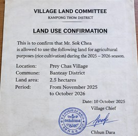

DESIGN MOCKUP — not a working app. These screens are static and do not send data anywhere.
They show how a borrower could add crop photos and scanned documents for their loan officer. All names and figures are synthetic.
Back to the portal
Farmer mobile app: concept screens
My loanFarmer Cooperative A · RF-2026-…
More information neededYour loan officer needs a few documents before the review.
Still needed: land use or tenancy document
Requested 12,000 USD · repay after the August and February harvests.
🏠 Home📤 Send💬 Officer
1 · Home: status in plain language and what is still needed
Photo of my cropsHold the phone steady
Rice fieldHarvestStorageEquipment
Share approximate location
🏠 Home📤 Send💬 Officer
2 · Camera capture; location is opt-in and approximate
Scan a documentPlace the page on a flat surface

Sales receiptLand use / tenancyDelivery recordOther
Letter from the village land committee
🏠 Home📤 Send💬 Officer
3 · Document scan with a simple type picker
What I have sentYour loan officer checks each item
Land use letter Waiting for officer
Rice field, main season Accepted
Mill delivery receipts Accepted
Storage shed Photo unclear — please retake
Photos are saved without hidden data such as GPS. Only your loan officer can see them.
🏠 Home📤 Send💬 Officer
4 · Upload history with the officer's review status
How this would connect (not built in this POC)
Borrowers would sign in with a farmer role bound to their pseudonymous borrower ID, so each person sees only their own application.
Scans would go through the same document ingestion and citation pipeline the loan officer already uses; photos would be stored as visual evidence.
Images would be re-encoded to remove metadata, and location would be stored only with consent and rounded to about 1 km.
The loan officer workspace would show these items under Evidence & questions, where the officer marks each one accepted or asks for a retake.